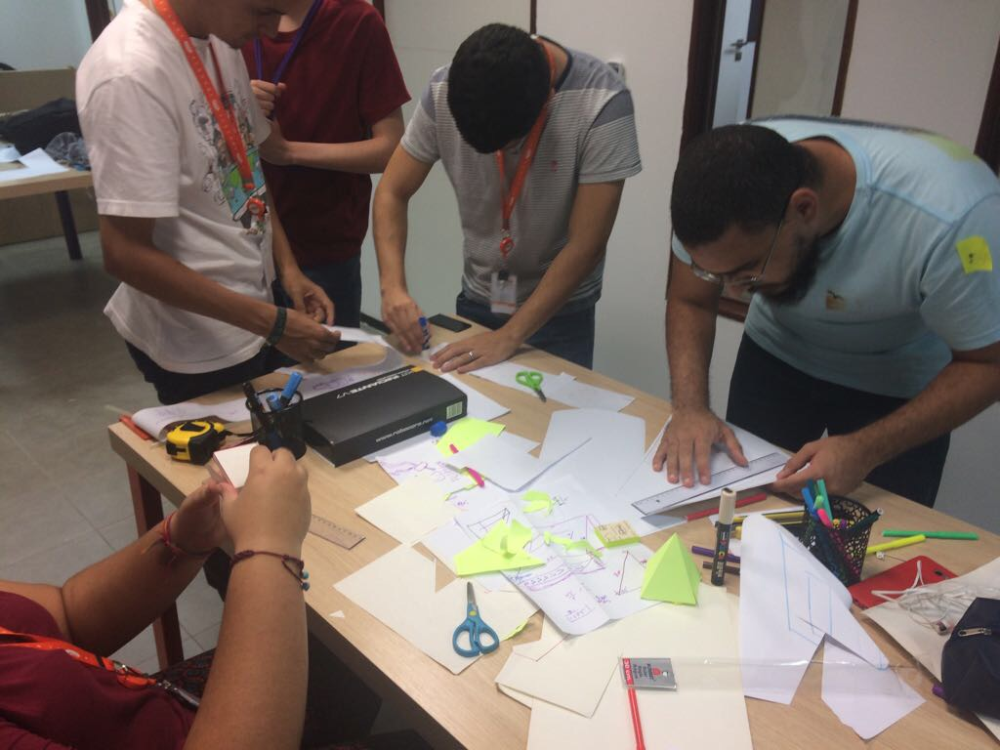
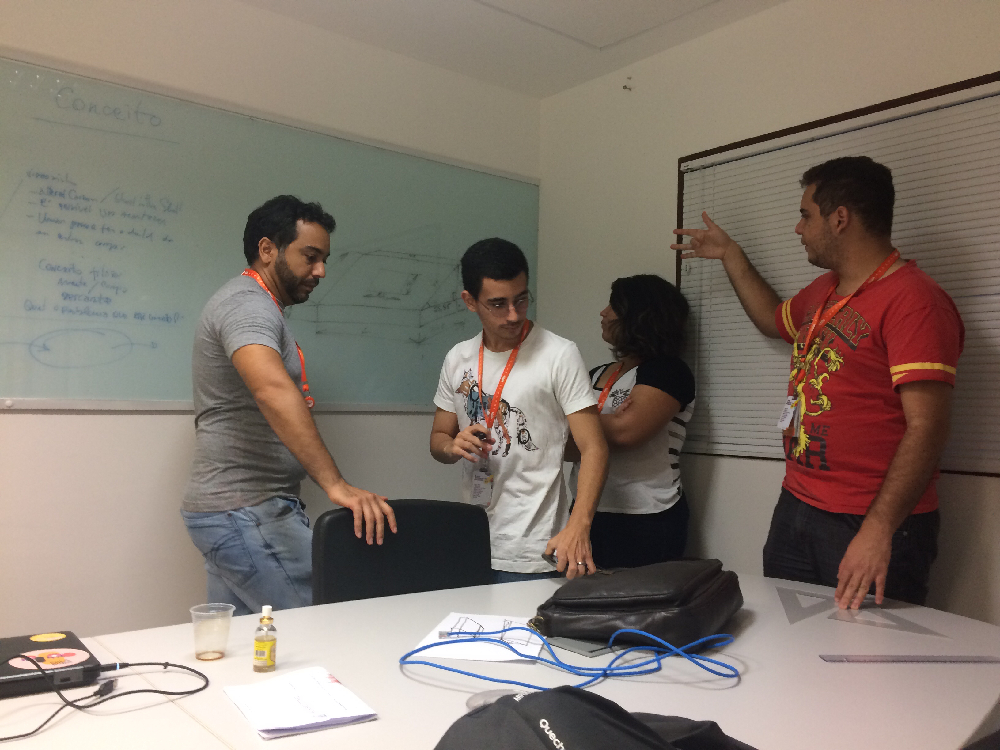
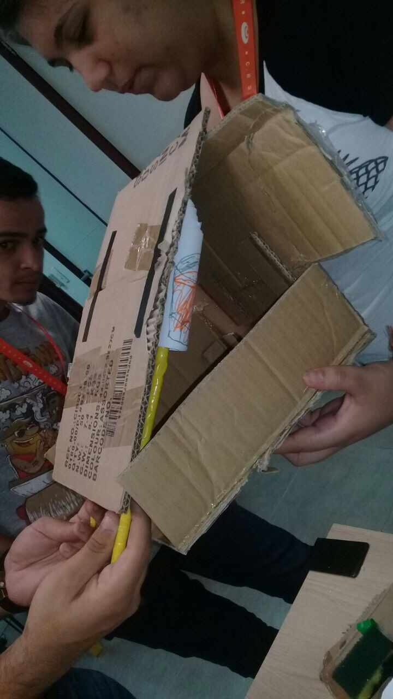

Nosso Progresso
Como nossos sprints estão progredindo
-> 13/03 - Sprint 00 -> Organizamos o backlog , definindo nossos objetivos/metas para ser completas até o final do projeto , assim como as metas para o final do sprint 00.
-> 14/03 - Sprint 00 -> Após assistir uma palestra , fomos para garagem e definimos um "blueprint" do nosso 1º protótipo.

-> 15/03 - Sprint 00 -> Fomos todos para garagem onde refinamos a blueprint do protótipo e começamos a montagem do mesmo.
> 
---------------------------------------------------------------------------------------------------------------------------------------------------